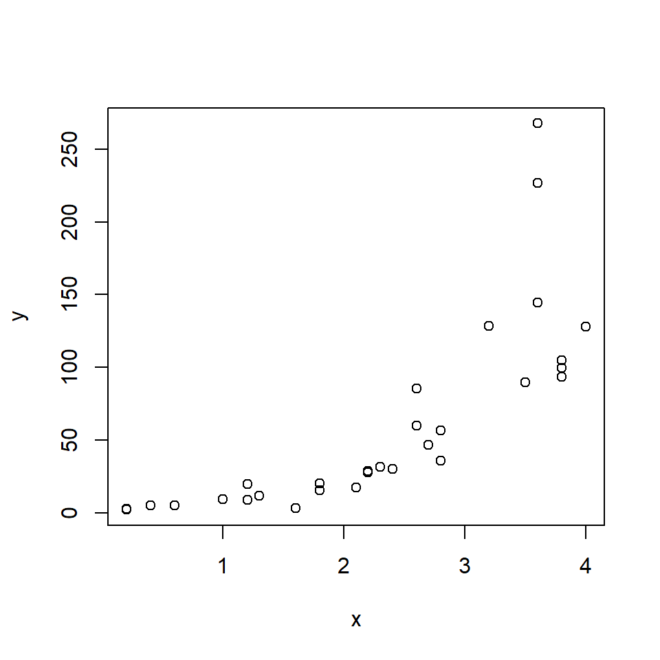
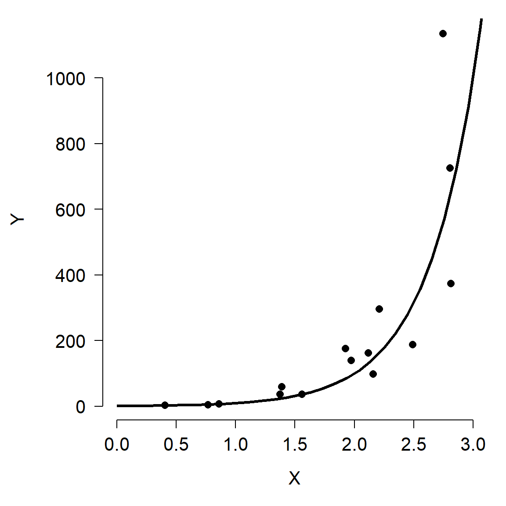
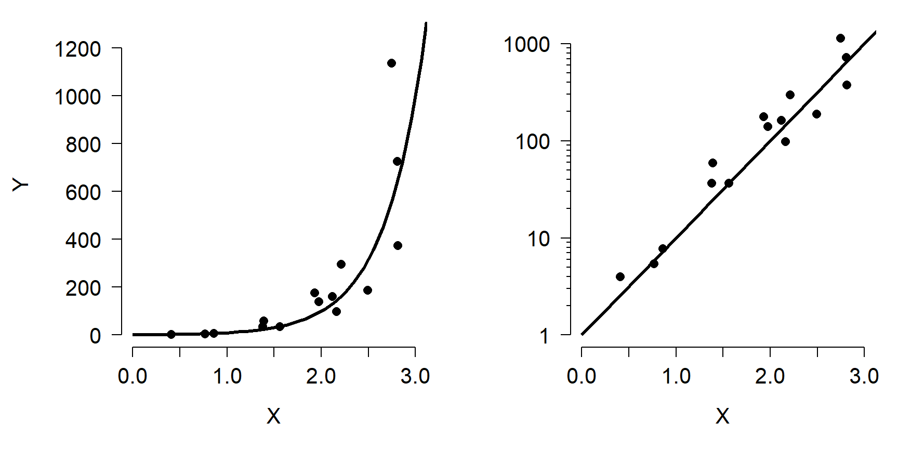
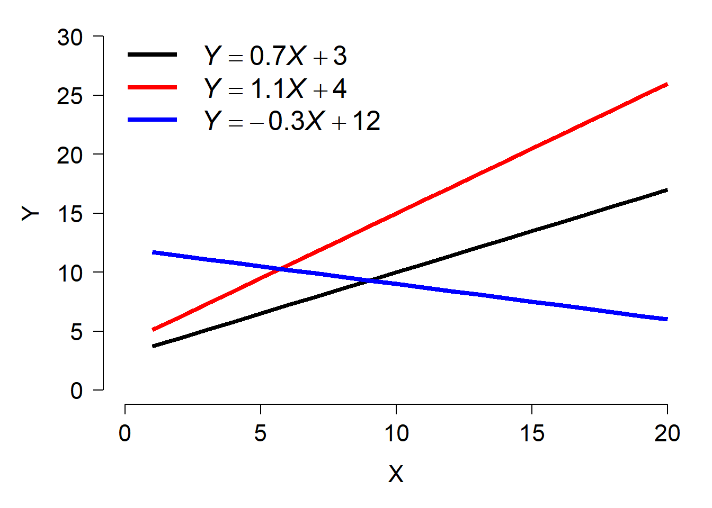

6.6 Alternatives to NLS
If your goal is to model some response variable that varies nonlinearly with predictor variables, there are several good alternatives to NLS. The examples below introduce generalized nonlinear models (GNM), quantile regression, generalized additive models (GAM), and classification and regression trees (CART). This page briefly describes and demonstrates each method. More in-depth tutorials might be developed in the future.
6.6.1 Generalized nonlinear models
Just as generalized linear models (GLM) extend the linear model by allowing for non-normal response distributions, the generalized nonlinear model (GNM) extends nonlinear models with non-normal response distributions. GNMs are available in the R package gnm (Turner and Firth 2020). This package is fairly new and tricky to fit models with. If you have an idea for a GNM model to fit, you might consider using MCMC in JAGS instead.
6.6.2 Quantile regression
Quantile regression is a technique to model specific quantiles of a response variable as a function of predictor variables. In linear regression, GLM, NLS, and GNM, the fitted model predicts the mean value of the response variable. With quantile regression, you can model other quantiles of the distribution. Quantile regression for the 0.5 quantile (50th percentile) is very similar to regression on the mean. Regression for other quantiles can allow you to describe relationships where the mean and predictor variables are not linearly related. A good reference for quantile regression is Cade and Noon (2003). Quantile regression models are available in the R package quantreg (Koenker 2021). Like least-squares models, quantile regression can be used to model both linear and nonlinear relationships.
6.6.2.1 Linear quantile regression example
For this example and the nonlinear quantile regression example we will use the “Mammals” dataset found in package quantreg. This dataset contains the body weights and maximum running speeds of 107 species of mammals.
library(quantreg)## Loading required package: SparseM##
## Attaching package: 'SparseM'## The following object is masked from 'package:base':
##
## backsolvedata(Mammals)
dat <- Mammals
dat$x <- log(dat$weight)
dat$y <- log(dat$speed)
plot(dat$x, dat$y)
As you might expect, larger animals tend to run faster than smaller animals. The relationship might be linear or nonlinear, so we will try both linear and nonlinear quantile regression models. First we will define a series of quantiles in [0, 1] at which to fit models. In my experience, quantiles \(\le\) 0.05 and \(\ge\) 0.95 tend to have numerical problems, especially for small datasets. By convention, the quantiles in quantreg are identified by the Greek letter \(\tau\) (“tau”). The fastest way to fit quantile regressions is in a for() loop.
taus <- 5:95/100
ntau <- length(taus)
rq.list <- vector("list", ntau)
for(i in 1:ntau){
rq.list[[i]] <- rq(y~x, data=dat, tau=taus[i])
}The list rq.list contains a fitted model for each quantile \(\tau\) in [0.05, 0.95]. We will extract some results from these model objects to present as our model outputs.
# data frame of parameter estimates and CI
res <- data.frame(tau=taus)
res$b0.mn <- sapply(rq.list, function(x){summary(x)$coefficients[1,1]})
res$b0.lo <- sapply(rq.list, function(x){summary(x)$coefficients[1,2]})
res$b0.up <- sapply(rq.list, function(x){summary(x)$coefficients[1,3]})
res$b1.mn <- sapply(rq.list, function(x){summary(x)$coefficients[2,1]})
res$b1.lo <- sapply(rq.list, function(x){summary(x)$coefficients[2,2]})
res$b1.up <- sapply(rq.list, function(x){summary(x)$coefficients[2,3]})Rather than present model predictions for all 90 quantiles, let’s just present a subset. Here we present the predicted 0.1, 0.3, 0.5, 0.7, and 0.9 quantiles of running speed (i.e., 10th, 30th, 50th, 70th, and 90th percentiles).
# predictions for selected quantiles
ptau <- c(1, 3, 5, 7, 9)/10
px <- seq(min(dat$x), max(dat$x), length=50)
pmat <- matrix(NA, nrow=length(px), ncol=length(ptau))
for(i in 1:length(ptau)){
curr.mod <- rq.list[[which(taus == ptau[i])]]
pmat[,i] <- predict(curr.mod, newdata=data.frame(x=px))
}Finally, we can produce a figure that shows (1) the data and predicted quantiles; (2) the estimate and 95% CI of the model intercept for each \(\tau\); and (3) the estimate and 95% CI of the model slope for each \(\tau\). The code for the figure has a lot of components, but each of them should be something familiar by now.
# plot data and parameter estimates vs. tau
par(mfrow=c(1,3), bty="n", mar=c(5.1, 5.1, 1.1, 1.1),
lend=1, las=1, cex.axis=1.3, cex.lab=1.3)
plot(dat$x, dat$y, ylim=c(0, 5.5),
xlab="Body mass (kg)",
ylab="Running speed (km/h)",
xaxt="n", yaxt="n")
for(i in 1:length(ptau)){
points(px, pmat[,i], type="l")
text(px[length(px)], pmat[nrow(pmat),i], ptau[i], adj=0)
}
xax <- 10^seq(-2, 4, by=1)
axis(side=1, at=log(xax), labels=xax)
yax1 <- c(1, 10, 100)
yax2 <- c(2:9, 2:9*10, 110)
axis(side=2, at=log(yax1), labels=yax1)
axis(side=2, at=log(yax2), labels=NA, tcl=-0.3)
plot(taus, res$b0.mn, type="s",
lwd=3, ylim=c(-1, 5),
xlab=expression(Quantile~(tau)),
ylab=expression(Model~intercept~(beta[0])))
points(taus, res$b0.lo, type="l", lwd=2, lty=2)
points(taus, res$b0.up, type="l", lwd=2, lty=2)
segments(0, 0, 1, 0, lty=2, lwd=1)
plot(taus, res$b1.mn, type="s", lwd=3,
ylim=c(-0.5, 0.5),
xlab=expression(Quantile~(tau)),
ylab=expression(Model~slope~(beta[1])))
points(taus, res$b1.lo, type="l", lwd=2, lty=2)
points(taus, res$b1.up, type="l", lwd=2, lty=2)
segments(0, 0, 1, 0, lty=2, lwd=1)
How do we interpret this result? One result is that the model intercept increases steadily with quantile. In other words, the quantile regression line has a greater intercept for greater response quantiles. This is very common. The rightmost plot shows that the quantile regression slope doesn’t vary much between quantiles. This suggests that the data would have worked well with ordinary linear regression. If there is a trend in slope (\(\beta_1\)) vs. quantile (\(\tau\)), this often indicates that the predictor variables affect not only the mean response, but may limit the response (for significant \(\beta_1\) at greater \(\tau\)) or facilitate the response (for significant \(\beta_1\) at smaller \(\tau\)).
6.6.3 Generalized additive models (GAM)
Models such as the LM and GLM, when fit with >1 predictor variable, have another property that we have not discussed: the effects of the different predictors are additive. In other words, the effect of one predictor is added to the effect of the other predictors to define the expected value of the response. This means that the effects of the predictors are independent of each other.
Generalized additive models (GAM) go one step further than GLMs by relaxing an additional assumption: the assumption of a linear relationship between the response variable on the link scale and the predictors. GAMs fit a curve to data that can vary in complexity. These curves are commonly called “smoothers”. However, the parameters of the curve are not tested individually in the way that the parameters in something like a quadratic model or non-linear model would be. Instead, the curve itself is treated as a regression coefficient. Compare the equation for the linear predictor of a GLM with k predictors
\[g\left(E\left(Y\right)\right)=\beta_0+\beta_1X_1+\beta_1X_1+\ldots+\beta_kX_k\]
to the equation of the predictor of a GAM with k predictors:
\[g\left(E\left(Y\right)\right)=\beta_0+f_1\left(X_1\right)+f_2\left(X_2\right)+\ldots+f_k\left(X_k\right)\]
Instead of each predictor being multiplied by a coefficient, a smoothing function \(f_k\left(x\right)\) of each predictor is estimated.
When should you use GAM? The most common application is situations where the response is not linearly related to the predictors, or if the response curve takes on a complicated shape. As you might suspect, the smoothers fitted in a GAM can be vulnerable to overfitting just as can be polynomial models or multiple regression models. Researchers usually control for this overfitting of the smoothers by limiting the complexity of the curves; this parameter is usually called the number of “knots”. Compared to NLS, GAMs have the significant advantage that the curve does not have to be defined ahead of time, and is thus much more flexible. The disadvantage is related to the advantage: unlike a LM, GLM, or NLS fit, a GAM fit will not result in model parameters (e.g., slopes) that can be interpreted.
Two good references to get you started are Wood (2017) and Zuur et al. (2007). The best-known R package for fitting GAMs is mgcv (CRAN page, accessed 2021-09-17).
6.6.3.1 GAM example with real data
Let’s explore GAMs by re-analyzing one of the NLS models we saw earlier. Download the dataset here and put it in your R working directory.
in.name <- "woodward2015data.csv"
dat <- read.csv(in.name, header=TRUE)
plot(dat$age, dat$mass)
In a previous section we fit Gompertz and von Bertalanffy growth curves to the data. The Gompertz curve fit slightly better than the von Bertalanffy curve. The final Gompertz curve and the data are shown below:

If we didn’t know about the Gompertz growth model, or had no idea what curve to start with, we could start by fitting GAMs to get a sense of the kind of curve we need. This is marginally better than just plotting the data and eyeballing a curve. Fit the GAMs with the function gam().
library(mgcv)## Loading required package: nlme## This is mgcv 1.8-36. For overview type 'help("mgcv-package")'.mod1 <- gam(mass~s(age), data=dat)
summary(mod1)##
## Family: gaussian
## Link function: identity
##
## Formula:
## mass ~ s(age)
##
## Parametric coefficients:
## Estimate Std. Error t value Pr(>|t|)
## (Intercept) 1351.14 34.37 39.31 <2e-16 ***
## ---
## Signif. codes: 0 '***' 0.001 '**' 0.01 '*' 0.05 '.' 0.1 ' ' 1
##
## Approximate significance of smooth terms:
## edf Ref.df F p-value
## s(age) 2.887 3.535 182.7 <2e-16 ***
## ---
## Signif. codes: 0 '***' 0.001 '**' 0.01 '*' 0.05 '.' 0.1 ' ' 1
##
## R-sq.(adj) = 0.95 Deviance explained = 95.4%
## GCV = 46522 Scale est. = 41356 n = 35Notice that the usual coefficients table is split into two parts: one for the intercept, and another for the smoother terms. The s(age) term in the model formula is how we requested a smoother on age. Without the s() function, we would get a linear term. The model summary also returns a pseudo-R2 based on deviance.
Next, we get the model predictions in the usual way:
px <- seq(min(dat$age), max(dat$age), length=100)
pred <- predict(mod1, newdata=data.frame(age=px),
type="response", se.fit=TRUE)The values in pred reveal a problem: the model predicts negative values! We probably should have used a log-link function to ensure positivity in the response.
mod2 <- gam(mass~s(age), data=dat, family=gaussian(link="log"))
summary(mod2)##
## Family: gaussian
## Link function: log
##
## Formula:
## mass ~ s(age)
##
## Parametric coefficients:
## Estimate Std. Error t value Pr(>|t|)
## (Intercept) 6.94435 0.05751 120.7 <2e-16 ***
## ---
## Signif. codes: 0 '***' 0.001 '**' 0.01 '*' 0.05 '.' 0.1 ' ' 1
##
## Approximate significance of smooth terms:
## edf Ref.df F p-value
## s(age) 5.492 6.532 48.21 <2e-16 ***
## ---
## Signif. codes: 0 '***' 0.001 '**' 0.01 '*' 0.05 '.' 0.1 ' ' 1
##
## R-sq.(adj) = 0.949 Deviance explained = 95.7%
## GCV = 52451 Scale est. = 42723 n = 35Now make the predictions but on the link scale, which we can back-transform.
px <- seq(min(dat$age), max(dat$age), length=100)
pred <- predict(mod2, newdata=data.frame(age=px),
type="link", se.fit=TRUE)
mn <- pred$fit
lo <- exp(qnorm(0.025, mn, pred$se.fit))
up <- exp(qnorm(0.975, mn, pred$se.fit))
mn <- exp(mn)Now make a plot. Compare this to the equivalent plot from the Gompertz model fit above.
par(mfrow=c(1,1), mar=c(5.1, 7.1, 1.1, 1.1),
las=1, lend=1, bty="n",
cex.axis=1.3, cex.lab=1.3)
# make the plot
plot(dat$age, dat$mass,
pch=16, cex=1.2,
xlab="Age (years)",
ylab="", ylim=c(0,4000))
title(ylab="Mass (kg)", line=5)
points(px, lo, type="l", col="red", lwd=3, lty=2)
points(px, up, type="l", col="red", lwd=3, lty=2)
points(px, mn, type="l", col="red", lwd=3)
Up to about 8 years of age, the GAM fit and the Gompertz fit look similar. However, above 8 years the GAM CI starts behaving strangely. This is because there are few data in that region with which to train the model. We could attempt to restrain the predictions by tweaking the model. One way is to reduce the number of “knots”, or bends in the smoother. This is done by adding an argument k to the s() function. Usually k should be \(\ge\) 2 and <n, where n is the number of observations. Try changing k in the commands below and see how the predictions change.
mod3 <- gam(mass~s(age, k=4), data=dat, family=gaussian(link="log"))
summary(mod3)##
## Family: gaussian
## Link function: log
##
## Formula:
## mass ~ s(age, k = 4)
##
## Parametric coefficients:
## Estimate Std. Error t value Pr(>|t|)
## (Intercept) 6.99435 0.05263 132.9 <2e-16 ***
## ---
## Signif. codes: 0 '***' 0.001 '**' 0.01 '*' 0.05 '.' 0.1 ' ' 1
##
## Approximate significance of smooth terms:
## edf Ref.df F p-value
## s(age) 2.937 2.997 86.4 <2e-16 ***
## ---
## Signif. codes: 0 '***' 0.001 '**' 0.01 '*' 0.05 '.' 0.1 ' ' 1
##
## R-sq.(adj) = 0.933 Deviance explained = 93.8%
## GCV = 63276 Scale est. = 56159 n = 35px <- seq(min(dat$age), max(dat$age), length=100)
pred <- predict(mod3, newdata=data.frame(age=px),
type="link", se.fit=TRUE)
mn <- pred$fit
lo <- exp(qnorm(0.025, mn, pred$se.fit))
up <- exp(qnorm(0.975, mn, pred$se.fit))
mn <- exp(mn)
par(mfrow=c(1,1), mar=c(5.1, 7.1, 1.1, 1.1),
las=1, lend=1, bty="n",
cex.axis=1.3, cex.lab=1.3)
# make the plot
plot(dat$age, dat$mass,
pch=16, cex=1.2,
xlab="Age (years)",
ylab="", ylim=c(0,4000))
title(ylab="Mass (kg)", line=5)
points(px, lo, type="l", col="red", lwd=3, lty=2)
points(px, up, type="l", col="red", lwd=3, lty=2)
points(px, mn, type="l", col="red", lwd=3)
Selecting the optimal number of knots is bit of an art as well as a science. Using too many knots places your model at risk of overfitting. Using too few knots risks not capturing a biologically relevant pattern. The best option is probably to fit the model using different numbers of knots and comparing them using AIC or predictive performance. For example:
mod.1 <- gam(mass~s(age), data=dat, family=gaussian(link="log"))
mod.2 <- gam(mass~s(age, k=2), data=dat, family=gaussian(link="log"))## Warning in smooth.construct.tp.smooth.spec(object, dk$data, dk$knots): basis dimension, k, increased to minimum possiblemod.3 <- gam(mass~s(age, k=3), data=dat, family=gaussian(link="log"))
mod.4 <- gam(mass~s(age, k=4), data=dat, family=gaussian(link="log"))
mod.5 <- gam(mass~s(age, k=5), data=dat, family=gaussian(link="log"))
mod.6 <- gam(mass~s(age, k=6), data=dat, family=gaussian(link="log"))
mod.7 <- gam(mass~s(age, k=7), data=dat, family=gaussian(link="log"))
AIC(mod.1, mod.2, mod.3, mod.4, mod.5, mod.6, mod.7)## df AIC
## mod.1 7.491541 480.3155
## mod.2 3.984267 501.6689
## mod.3 3.984267 501.6689
## mod.4 4.936648 487.7807
## mod.5 5.896483 480.4869
## mod.6 6.851747 477.4232
## mod.7 7.161195 478.51316.6.4 Classification and regression trees (CART)
The final alternative to NLS that we will explore is classification and regression trees (CART). CART is really a family of methods that use nonparametric partitioning to either place observations into categories (classification trees) or predict their numeric values (regression trees). A typical regression tree is shown below (De’ath and Fabricius 2000):

The tree predicts sediment thickness around coral reefs (as an ordinal variable) using two factors (shelf and reef type) and a numerical predictor (depth). The expected value for each observation is determined by going down the tree, selecting the correct statement about that observation. For example, an observation on the outer shelf (shelf = O), at 12 m depth, would have expected sediment thickness 0.46 (so values 0 or 1 would be most common). Each decision point is called a “node”; the predicted values are at the terminal nodes (or “leaves”). In this tree, the distribution of response values at each leaf is shown.
Tree-based models can describe patterns where there is no simple data model (e.g., curve shape), or where there are complex interactions between predictor variables (interactions manifest as effects being nested within each other). Tree-based models have the disadvantage that they require large amounts of data and can be difficult to present and interpret. Worse, it can be difficult to distinguish between a tree-based model that explains a high proportion of variation in the data, and a model that is badly overfit (i.e., fitting random noise). Cross-validation can help with this problem but is no guarantee of a robust fit.
Another name for these kinds of tree-based models is “recursive partitioning”. This means that the models partition the data over and over until homogenous groups are found. The main R package for CART is rpart (Therneau and Atkinson 2019).
6.6.4.1 Classification tree example with real data
Hutcheon et al. (2002) reported data on brain morphology and lifestyle from 63 species of bats. Their dataset contains the following variables:
| Variable | Meaning |
|---|---|
species |
Species |
family |
Taxonomic family |
diet |
Herbivore, gleaner, hawker, or vampire |
bow |
Body weight (g) |
brw |
Brain weight (\(\mu\)g) |
aud |
Auditory nuclei volume (mm3) |
mob |
Main olfactory bulb volume (mm3) |
hip |
Hippcampus volume (mm3) |
Import the dataset bat_data_example.csv. You can download it here. The code below requires that you have the file in your R working directory.
in.name <- "bat_data_example.csv"
dat <- read.csv(in.name, header=TRUE)
meas.cols <- 4:ncol(dat)We are interested in whether the relative sizes of different brain components are related to diet. Statistically, we are testing whether any combination of brain component sizes can correctly classify diet type.
Let’s briefly explore the data. First, we can see how the variables are related to each other. We can do that with a scatterplot matrix.
panel.cor <- function(x, y, digits = 2,
prefix = "", cex.cor, ...){
usr <- par("usr"); on.exit(par(usr))
par(usr = c(0, 1, 0, 1))
r <- cor(x, y, use="complete.obs")
txt <- format(c(r, 0.123456789), digits = digits)[1]
txt <- paste0(prefix, txt)
if(missing(cex.cor)) cex.cor <- 0.8/strwidth(txt)
text(0.5, 0.5, txt, cex = cex.cor * abs(r))
}
pairs(dat[,meas.cols],
lower.panel = panel.smooth,
upper.panel = panel.cor,
gap=0)
What these correlations mean is that the variables are redundant with each other, and with overall size (body mass, bow). This makes a lot of sense for morphometric data. We need to keep this in mind as we analyze the data.
It might make sense to log-transform the data because we are working with measurements (which cannot be negative). Log-scale data will also be more normally distributed, which is not necessary for CART but can be more convenient.
# log transform
dat[,meas.cols] <- apply(dat[,meas.cols], 2, log)In addition, we should we can factor out the effect of overall brain size. This will make it so that any patterns we see are not just a result of brain size. Below we use the geometric mean of the three brain volumes as the “total brain size” because the variable brw contains many other components (and is a mass, not a volume). Note that the mean of the log-transformed values is really the geometric mean, not the arithmetic mean.
vols <- meas.cols[-c(1:2)]
dat$geom <- apply(dat[,vols], 1, mean)
dat[,vols] <- apply(dat[,vols], 2, function(x){x/dat$geom})Remake the scatterplot matrix and observe that the three brain volumes are no longer so strongly correlated.
pairs(dat[,meas.cols],
lower.panel = panel.smooth,
upper.panel = panel.cor,
gap=0)
Now we should be ready to fit a classification tree. The syntax is simple (and similar to a GLM):
library(rpart)
set.seed(123)
mod1 <- rpart(diet~bow+aud+mob+hip, data=dat)
par(mfrow=c(1,1), mar=c(0.5, 0.5, 0.5, 0.5), xpd=NA)
plot(mod1)
text(mod1, use.n=TRUE, all=TRUE)
The default plot isn’t very attractive, but it does the job. A nicer version is hard to make in R, but can be assembled in Powerpoint or your favorite drawing program very easily. The tree summarizes graphically how the algorithm partitioned the data:
- If mob \(\ge\) 0.9589, classify as herbivore.
- If mob < 0.9589 AND aud < 0.7689, classify as gleaner.
- If mob < 0.9589 AND aud \(\ge\) 0.7689, classify as hawker (aerial predator).
For each observation, start at the top and go LEFT if the statement at a node is true, and right if the statement is false. The numbers at each terminal node show the number of observations from each category that wound up at that node. For example, 32 observations were classified as herbivores, and 28 of them were correct (0/2/28/2). We can also see that 22 out of 24 observations classified as hawkers by the model were actually hawkers. The confusion matrix for the model is obtained by making a frequency table of the predicted classifications and the actual classifications. The table below puts the predictions on the columns and the actual diets on the rows.
pred <- predict(mod1, type="class")
ftable(pred~dat$diet)## pred gleaner hawker herbivore vampire
## dat$diet
## gleaner 4 1 0 0
## hawker 3 22 2 0
## herbivore 0 1 28 0
## vampire 0 0 2 06.6.4.2 Regression tree example with real data
We’ll use the bat data again to construct a simple regression tree. Can we predict main olfactory bulb volume from diet and other facts about a species? Load the bat data from above and go through the steps of log-transforming and relativizing to overall mass.
Now fit the model and plot it:
mod2 <- rpart(mob~diet+bow, data=dat)
par(mfrow=c(1,1), mar=c(0.5, 0.5, 0.5, 0.5), xpd=NA)
plot(mod2)
text(mod2, use.n=TRUE, all=TRUE)
The regression tree predicts the mean response variable at each terminal node. The logic of how to follow the tree to classify each observation is similar to before. At each node, go left when the statement is true and right when it is false. Factor levels are identified by letters corresponding to their order (usually alphabetical; check levels(factor(dat$diet))). Keep in mind that the values are all on the all on the log scale, because we transformed the values. Another option would have been to standardize the values.
The interpretation of this tree is as follows:
- Overall mean = 0.8695, n = 63 (top node)
bow< 1.793 \(\rightarrow\) 8 observations with mean = 0.08476bow\(\ge\) 1.793 and diet = gleaner (a) or hawker (b) \(\rightarrow\) 31 observations with mean = 1.115bow\(\ge\) 1.793 and diet \(\neq\) gleaner or hawker\(\rightarrow\) and bow < 2.451 \(\rightarrow\) 7 observations with mean = 0.6348bow\(\ge\) 1.793 and diet \(\neq\) gleaner or hawker\(\rightarrow\) and bow \(\ge\) 2.451 \(\rightarrow\) 17 observations with mean = 0.8885
We can visually inspect the effectiveness of the tree by plotting the predicted vs. observed values:
pred <- predict(mod2, type="vector")
pchs <- 15:18
diets <- sort(unique(dat$diet))
use.pch <- pchs[match(dat$diet, diets)]
plot(dat$mob, jitter(pred), pch=use.pch)
abline(a=0, b=1, col="red")
legend("topleft", legend=diets, pch=pchs)
Remember that regression trees only predict the mean within each group, not individual values. A good regression tree will have a relatively small spread within each group; the tree we just fit is not very good.
Better results can be obtained with random forests (Cutler et al. 2007, Brieuc et al. 2018) and boosted regression trees (BRT) (De’ath 2007, Elith et al. 2008). BRT use not one but many trees to obtain a more robust fit. Both of those techniques are powerful and underutilized in biology…but that is changing. At some point I’ll produce a page demonstrating BRT. James et al. (2013) contains primers on these and other machine learning techniques.